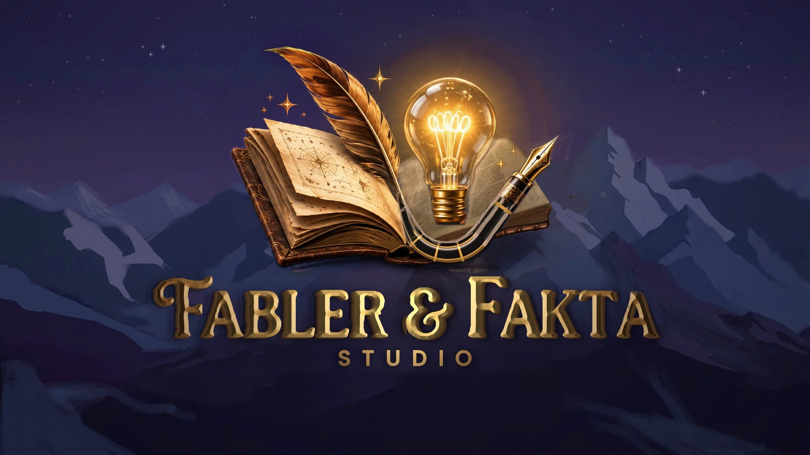

Bad Line
En soundboard för samtal du inte vill ha. Spela upp brus, avbrott och dålig täckning – och smit snyggt ur samtalet.
Öppna appen
Appar
Appar som är roliga, nyttiga – eller både och.
En soundboard för samtal du inte vill ha. Spela upp brus, avbrott och dålig täckning – och smit snyggt ur samtalet.
Öppna appenEtt test för synestesi – utforska hur bokstäver, siffror och färger hänger ihop för just dig.
Öppna appen Testas på Google PlayNya appar är under arbete. Håll utkik!
Kommer snartIllustration & animation
Illustration och animation för böcker, appar, spel och allt däremellan. Galleriet fylls på inom kort.
Om studion
Fabler & Fakta Studio är en liten oberoende studio som gör appar, illustration och animation. Allt utgår från samma idé: att det som är bra att veta också kan vara roligt att upptäcka.
Kontakt
Frågor, idéer eller samarbete? Hör av dig.
Studion på GitHub